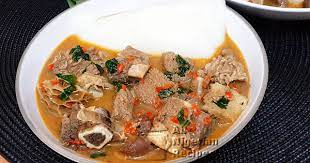

Peppersoup Recipe

Description
This pepper soup is a delicious Nigerian recipe that combines the aromatic flavours of ehuru with traditional goat’s meat. Don’t forget to add a generous amount of ground crayfish for extra flavour! Simply follow our easy step-by-step recipe and you’ll soon be enjoying a hearty portion of proudly Nigerian food.
Ingredients
- 10 iwo/ehuru
- 2 urheri/uda
- 2 umilo/ulima
- 1/2 tsb ataiko/atariko
- 21/2 tsb irugeje
- Scent leaves (optional)
- tbsp. ground crayfish
- seasoning cubes
- 1 tsp. salt
- tbsp. ground pepper
- 1 kg goat’s meat
Steps
- Cut goat’s meat into bite-size pieces, wash and place in a pot with water, season with salt, onions and seasoning cubes. Allow to boil for 20 min. Add more water.
- Crack open the umilo, gbafilo and iwo, blend the contents alongside ataiko and irugeje. Add all ground spices – pepper, ataiko, irugeje, iwo, umilo, gbafilo, crayfish and deseeded urheri into the pot as well. Alternatively, you can purchase pre-blended pepper soup spice and add 2 tablespoons.
- Add some chopped fresh pepper.
- Cover the pot and allow to cook – the pepper soup should be ready in 35 min.
- Add scent leaves and allow to simmer for 5 min.